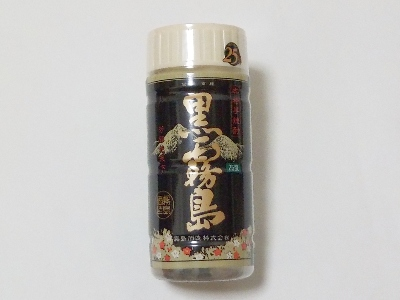

宮崎県都城市下川東4丁目28号1番
更新日 : 2025/03/01

飲み屋さんでも酒屋さんでもよく見る人気のお酒です。
飲んだら確かに美味しいですね。私はアルコール25%のお酒はキツイって思うんですが、これはストレートでも美味しく飲めました。
ちょっと高くてもこの味ならいいかな。
【おいしいものを食べよう。】【たくさん寝よう。】
【ソロ活をしよう!】【季節感のあることをしよう。】【動画視聴はほどほどに。】【当サイトの全てのコンテンツは無断転載禁止です。】